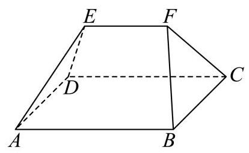
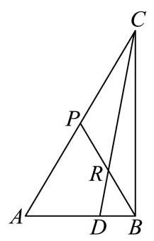

填空题
按本区原卷题号顺序排列。
静安 · 第1题 ★☆☆☆☆ · 教师预估
直径为 22cm 的球的表面积为___ cm2 . (计算结果保留 π )
考点：球表面积。
难度依据：球表面积
展开答案与解析
静安 · 第2题 ★★☆☆☆ · 教师预估
设 i 是虚数单位,计算: (1−i1+i)3= ___.
考点：复数除法与乘方。
难度依据：复数除法与乘方
展开答案与解析
静安 · 第3题 ★☆☆☆☆ · 教师预估
在 (x3−x1)6 的二项展开式中， x2 的系数为___. (用数字作答)
考点：二项式系数。
难度依据：二项式系数
展开答案与解析
静安 · 第4题 ★★☆☆☆ · 教师预估
双曲线 4x2−y2=1 的两条渐近线夹角大小为___. (结果用反三角函数值表示)
考点：双曲线渐近线夹角。
难度依据：双曲线渐近线夹角
展开答案与解析
静安 · 第5题 ★★☆☆☆ · 教师预估
若 tan(π−a)sin(2π−a)⋅cot(2π+a)=31 ，则 cos2a= ___.
考点：诱导公式与二倍角。
难度依据：诱导公式与二倍角
展开答案与解析
静安 · 第6题 ★☆☆☆☆ · 教师预估
某汽车制造厂生产一种用于发动机的活塞销，其设计标准直径 μ 为 10.00mm . 根据长期生产数据，该活塞销的实际直径服从正态分布，方差 σ2 为 0.0004mm2 . 规定:活塞销的直径在 9.96mm 到 10.04mm 之间为合格品. 随机抽取一个活塞销,其为合格品的概率是 ___. (结果保留三位小数)
参考数据: 若随机变量 X∼N(μ,σ2) ,则 P(μ−σ<X≤μ+σ)≈0.683 , P(μ−2σ<X≤μ+2σ)≈0.954,P(μ−3σ<X≤μ+3σ)≈0.997.
考点：正态分布。
难度依据：正态分布
展开答案与解析
静安 · 第7题 ★★★☆☆ · 教师预估
现有两个罐子，都放有 3 个球，这些球除颜色外，大小与质地都相同， A 罐中放有 2 个
红球, 1 个白球, B 罐中放有 3 个红球, 从两个罐子中各摸出 1 个球并交换, 这样交换 2 次后,白球还在 A 罐子中的概率是___.
考点：全概率与换球。
难度依据：全概率与换球
展开答案与解析
静安 · 第8题 ★★☆☆☆ · 教师预估
已知定义在 R 上的偶函数 y=f(x) 的最小正周期为 2,当 0≤x≤1 时, f(x)=x ,则当 7≤x≤8 时， f(x)= ___.
考点：奇偶性与周期性。
难度依据：奇偶性与周期性
展开答案与解析
静安 · 第9题 ★★★☆☆ · 教师预估
在代表我国古代数学成就的经典著作《九章算术》中, 称如下图中的多面体 ABCDEF 为 “刍(chu)甍(meng)”. 若底面 ABCD 是边长为 4 的正方形， EF=2 ，且 EF//AB ， △AED 和 △BFC 是等腰直角三角形, ∠AED=∠BFC=90∘ ,则 FC 与底面 ABCD 所成角的正弦值为___.

考点：刍甍与线面角。
难度依据：刍甍与线面角
展开答案与解析

静安 · 第10题 ★★★☆☆ · 教师预估
如图所示，在 ABC 中， ∠BAC=3π ， ∣AC∣=2∣AB∣ ， ∣AB∣=1 ， P 为边 AC 的中点， D 在边 AB 上，且 ∣AD∣=2∣DB∣ ， CD 交 BP 于点 R ，则 ∣CR∣= ___.

考点：三角形分点与坐标。
难度依据：三角形分点与坐标
展开答案与解析

静安 · 第11题 ★★★★☆ · 教师预估
本题资料或解析有待核事项，预览不可作为已审定成品。
若满足 ∣z∣=5 ，且 ∣z+5∣−∣z−5∣=6 的复数 z 有两个，分别设为 z1 、 z2 ，则 ∣z1−z2∣= ___.
考点：复数对应点与轨迹；圆与双曲线交点。
难度依据：复数对应点与轨迹；圆与双曲线交点
核查说明：仅本题解析局部回核；其他题未据此判定终审通过。；源解析曾误写y²=±16/5；已回源并独立复核修订为y=±16/5。
展开答案与解析

静安 · 第12题 ★★★★☆ · 教师预估
设 a>0 ,函数 f(x)=⎩⎨⎧x+2,x<−aa2−x2,−a≤x≤a−x−1,x>a ,给出下列三个结论:
① y=f(x) 在区间 (a−1,+∞) 上单调递减；
② 当 a≥1 时， y=f(x) 存在最大值；
③ 设 M(x1,f(x1))(x1≤a),N(x2,f(x2))(x2>a) ，则 ∣MN∣>1 .
其中所有正确结论的序号是___.
考点：分段函数最值；点间距离。
难度依据：分段函数最值；点间距离
展开答案与解析
选择题
按本区原卷题号顺序排列。
静安 · 第13题 ★☆☆☆☆ · 教师预估
函数 y=x34 的大致图象是( )
A. 
B. 
C. 
D. 
考点：幂函数图像。
难度依据：幂函数图像
展开答案与解析
静安 · 第14题 ★★☆☆☆ · 教师预估
已知集合 A={xx2−x−6=0},B={x1−xx+3>0} ，则 A∩B= ( ).
A. {−2,3}
B. (−3,1)
C. {3}
D. {−2}
考点：集合关系；分式不等式。
难度依据：集合关系；分式不等式
展开答案与解析
静安 · 第15题 ★★☆☆☆ · 教师预估
袋子里装有四枚围棋子, 其中两枚黑色棋子、两枚白色棋子, 从中随机取出两枚棋子, 那么互斥而不对立的事件是 ( ).
A. “至多有一枚白色棋子” 与 “至多有一枚黑色棋子”
B. “至多有一枚白色棋子” 与 “都是黑色棋子”
C. “恰好有一枚白色棋子” 与 “都是黑色棋子”
D. “至多有一枚白色棋子” 与 “都是白色棋子”
考点：互斥事件与对立事件。
难度依据：互斥事件与对立事件
展开答案与解析
静安 · 第16题 ★★★★☆ · 教师预估
设 M 、 N 分别是棱长为 1 的正方体的两个不同顶点,点 P 在该正方体的表面上 (含棱和顶点) 运动,且不与 M 、 N 两点重合. 关于 PM⋅PN ,给出下列两个结论:
① PM⋅PN 存在最小值，且最小值小于零；
② PM⋅PN 存在最大值，且最大值大于零.
则下列判断正确的选项是 ( ).
A. ①正确，②错误
B. ①错误，②正确
C. ①和②都错误
D. ①和②都正确
考点：正方体数量积最值；正方体动点。
难度依据：正方体数量积最值；正方体动点
展开答案与解析
解答题
按本区原卷题号顺序排列。
静安 · 第17题 ★★★☆☆ · 教师预估
本题资料或解析有待核事项，预览不可作为已审定成品。
下表是某品牌净化器的年销售量与年份的统计表.
| 年份 | 2021 | 2022 | 2023 | 2024 | 2025 |
| 年份代码 x | 1 | 2 | 3 | 4 | 5 |
| 年销售量 y (万台) | 2 | 3.5 | 2.5 | 8 | 9 |
(1)用计算器计算净化器的年销售量 y 关于年份代码 x 的线性回归方程;(回归系数计算结果保留两位小数)
(2)为了调查 A 、 B 两地区人群对该品牌净化器的了解情况，调查机构在 A 、 B 两地区的人群中分别进行品牌知晓情况的问卷调查. 统计知晓与不知晓的人数，得到如下 2×2 列联表.
| 知晓 | 不知晓 | 合计 |
| A 地区 | 80 | 20 | 100 |
| B 地区 | 40 | 60 | 100 |
| 合计 | 120 | 80 | 200 |
试根据表中数据判断 A 、 B 两地区的人群对该品牌净化器的知晓情况是否有显著差异. (规定显著水平 a=0.05 )
附:关于回归方程 y=ax+b ，回归系数的计算公式 ⎩⎨⎧a=i=1∑n(xi−xˉ)2i=1∑n(xi−xˉ)(yi−yˉ)b=ni=1∑nyi−ai=1∑nxi ,其中 (xˉ,yˉ) 为样本点的中心; χ2 的计算公式 χ2=(a+b)(b+d)(a+c)(c+d)n(ad−bc)2 ;
| P(χ2≥k)=a | 0.05 | 0.01 | 0.001 |
| k | 3.841 | 6.635 | 10.828 |
考点：（1）线性回归方程；（2）列联表独立性检验。
难度依据：回归与独立性检验
核查说明：答案解析第530字符附近：损坏字符或字体覆盖风险，需回源并视觉检查（底稿扫描记录）；答案解析第580字符附近：损坏字符或字体覆盖风险，需回源并视觉检查（底稿扫描记录）
展开答案与解析
静安 · 第18题 ★★☆☆☆ · 教师预估
已知等差数列 {an} 的首项 a1=1 ，公差为 2，等比数列 {bn} 的首项 b1=1 ，公比为 2， 数列 {cn} 满足 cn={an, 当 n 为奇数时 bn, 当 n 为偶数时 ( n 为正整数).
(1)依次写出数列 {cn} 的前 6 项；
(2)设数列 {cn} 的前 n 项和为 Sn ，求 S2n .
考点：（1）交错数列前六项；（2）奇偶分组等差等比求和。
难度依据：奇偶交错等差等比求和
展开答案与解析
静安 · 第19题 ★★★☆☆ · 教师预估
如图,在长方体 ABCD−A1B1C1D1 中, AB=4,BC=3,CC1=2,M 是 AB 的中点.

(1)求四棱锥 A1−AMCD 的体积；
(2)求平面 A1ADD1 与平面 A1MC 所成的锐二面角的大小. (结果用反三角函数值表示)
考点：（1）棱锥体积；（2）二面角。
难度依据：棱锥体积与二面角
展开答案与解析
静安 · 第20题 ★★★★☆ · 教师预估
在 xOy 平面直角坐标系中, O 为坐标原点. 设椭圆 Γ:a2x2+b2y2=1(a>b>0),Γ 的左、 右焦点分别为 F1 、 F2,∣F1F2∣=2,Γ 的离心率为 21 .
(1)求椭圆 Γ 的方程；
(2)过原点 O 作两条相互垂直的射线，与椭圆 Γ 分别交于 A 、 B 两点，证明:原点 O 到直线 AB 的距离为定值；
(3)过椭圆 Γ 的右焦点 F2 且不与坐标轴垂直的直线 l 与椭圆 Γ 交于 P 、 Q 两点，点 M 是点 P 关于 x 轴的对称点. 在 x 轴上是否存在一个定点 N ,使得 M 、 Q 、 N 三点始终共线? 若存在,求出点 N 的坐标; 若不存在,说明理由.
考点：（1）焦距离心率求椭圆方程；（2）垂直射线与点到弦距离定值；（3）对称点和焦点弦定点。
难度依据：椭圆定距与定点
展开答案与解析
静安 · 第21题 ★★★★★ · 教师预估
已知函数 f(x)=xalnx(a∈R 且 a=0) .
(1)当 a=1 时，求函数 y=f(x) 的极值；
(2)若直线 y=x−1 是曲线 y=f(x) 的一条切线，求 a 的值和切点的坐标；
(3) 若函数 g(x)=4xa2+x+2−a 的图像与 y=f(x) 的图像相交于相异两点 A 和 B ,求 a 的取值范围.
考点：（1）导数求极值；（2）切线条件求参数；（3）函数交点个数与参数。
难度依据：导数极值切线及交点
展开答案与解析